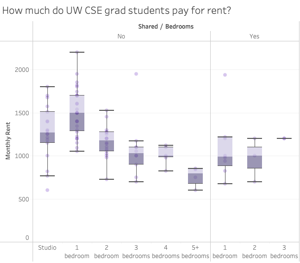
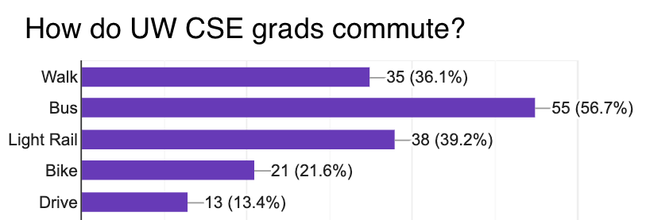

How much does a typical Allen School PhD student spend on rent per month? (top)
As of March 2022, the mean rent paid by PhD students in the Allen
School is $1238/month. The mean utilities paid is $107 per month.
Detailed statistics are available
here.
You can find listings for housing on sites such as Zillow,
Craigslist, PadMapper, or aPodment.com, and contact the listing
agent (or landlord directly). The listing agent (or landlord)
gets back to you with a time to visit the listing.
Once you visit the listing and would like to move forward with
the process, you pay a non-refundable application fee of $40.
The application consists of a background and credit check.
The landlord screens the applications in the order that they
are received (First-In-Time), so the first qualify applicant
will be accepted.
If the landlord or agent accepts your application,
you and the landlord or agent sign a lease and the keys are
delivered to you.
The best strategy is to look as soon as possible. The busiest
times usually peaks on August 10th because of the projected
move-in date of September 1st. Since UW does not start until
mid- to late- September, most of the students prefer to start
their lease period by September 1st. Existing tenants only have
to give 20 days notice, so landlords are only guaranteed to know
about vacancies that far in advance. This means that the best
time to look for new places is just after the 10th of the month
before you want your lease to start.
It's typically very stressful as a potential renter. It is a
landlord's market in Seattle, meaning that there is a huge
supply of renters with limited rental inventory. Each listing
receives many inquiries and landlord's receive multiple rental
applications per listing. The window for applying for housing is
typically short. Within a week of a rental listing, multiple
offers are submitted and selected by the landlord. If you find
a place you like, contact the landlord, visit the place, and
sign the lease as soon as possible!
UW-managed graduate student dorms and apartments can be found
here.
Historically, rates range from $1300 to $2000 a month depending
on the housing configuration (e.g., 1BR, 2BR). Some benefits
of on-campus housing are that they are very close to campus,
and are furnished.
Finding other grad students (inside or outside of CSE) to live
with can be very helpful for lowering costs.
If you're affiliated with the Paul G. Allen School of Computer
Science at the University of Washington, try e-mailing
cs-grads@cs.washington.edu
to see if others are looking for roommates.
misc@cs.washington.edu
is also a great mailing list (and typically subscribed to by
faculty and staff in addition to grads). The incoming new-grads
(at new-grads@cs.washington.edu)
is a great place to search for roommates for the upcoming Autumn quarter.
The best way is to consistently monitor Zillow or Craigslist,
as good deals will appear very briefly before they are rented out.
The best deals usually occur during off-rental months
(such as December-April). The demand is much lower during this
time, but the number of units on the market will also be less.
Leases are typically 12 months in duration, but can default to
to month-to-month afterwards. It's very common that your
landlord may increase the cost of rent when renewing the lease
term or moving to a month-to-month lease.
Leases typically also contain additional charges: an application
fee, security deposit, pet deposit (if applicable), parking,
and cleaning fees on move-out.
Renters in Seattle can request to pay their move-in costs
(security and pet deposits, last month rent if applicable) in up
to 6 monthly installments for a 12-month lease. This can help
lessen the upfront costs of moving considerably. Landlords
don't have to offer this option, but do have to honor it upon request.
More Info
Do I need a car to live in Seattle?
In general, no. Many people in the Allen School and the city live
car-free. The UW campus is very accessible by public
transportation and bike infrastructure. Popular neighborhoods
such as Capitol Hill, the University District, Fremont, Roosevelt,
and Wallingford are dense (for Seattle) and walkable - many
amenities like restaurants, parks, and other services are within
walking distance.
However, many students do choose to own cars, which are helpful
for making cross-city trips, doing activities in the surrounding
wilderness like hiking and skiing, or if you want to live in the
more suburban neighborhoods farther from campus. Note
that street parking in the inner neighborhoods like Capitol Hill
is often difficult to find, and may require a paid permit.
Seattle has two main modes of public transportation: light rail
and bus. You can see an overview of the system
here.
The Link Light Rail system connects the UW campus with Northgate,
Roosevelt, U-District, Capitol
Hill, Downtown, South Seattle, and the airport.
The light rail is very fast and runs mostly on underground/elevated
tracks. Many students live near the light rail stations in
Roosevelt and Capitol Hill, and commute via light
rail, and other neighborhoods farther on the line like Beacon
Hill and Columbia
City are also possibilities. The light rail system is rapidly
expanding, and new stops will open in the Central District
and the Eastside in 2023.
Seattle also has great bus service that covers the rest of the city,
operated by King County Metro. In core neighborhoods, buses run
frequently, every 15 minutes or faster. Except on certain buses
at rush hour (usually downtown buses), buses are often uncrowded
and move quickly.
Seattle can be wet and hilly in places, but many of us commute
via bike and use bikes to get around!
There are some good pieces of bike infrastructure around to make
biking easier and safer. The Burke-Gilman
trail is a great bike/pedestrian trail that links many
neighborhoods with Seattle, including Ballard, Fremont, Wallingford,
the U-District, Sand Point, and more. There are
protected bike lanes on certain thoroughfares, such as Broadway
in Capitol Hill, and Roosevelt Ave in the U-District, which make it
safer to ride on the street. However, outside of protected
corridors, you may have to share the road with cars, which can
be dangerous. You can view the city bike
network
here.
Is there air conditioning (A/C) in apartments? What about heating?(top)
Air conditioning is not usually built into housing in Seattle,
especially older housing. To stay cool during the summer, it's
common to use a box fan to pull cool air from the outside at
night. Most of the heating is forced air; heaters are typically
per room or per area (instead of a central furnace).
Grad Housing Survey Results
We conducted a survey of Allen School PhD students in January
2022, asking about where they lived, and how much they paid
in rent. We received 97 responses, or about 30% of the student
body.
Rent
The mean rent paid by respondents was $1238, with a median of
$1200, and interquartile range of $1000-$1460
(25th percentile-75th percentile).
Though rent is higher in units with fewer bedrooms, most opt to
live in studio to 2 bedroom units. Especially in 1 bedroom units,
the cost is offset by sharing a room with a roommate or partner.

Monthly rent paid by grad students,
by unit size and whether they share a bedroom with
another resident.
Count of grad students living in different sizes of
units.
Locations
Grad students are distributed fairly widely across the city,
but among our survey respondents, most are clustered in neighborhoods
near campus: the University District, Capitol Hill,
Ravenna, Wallingford, and Roosevelt.
Note that the data on the map is not comprehensive!
Grad students live throughout the city; more grad students
than indicated have lived in the Central District, Wallingford,
Fremont, Eastlake, and South Lake Union.
Commute
Grad students commute to campus using a variety of modes. The
majority of students ride the bus some of the time, and many
also walk or take the Light Rail. A smaller proportion bike or
drive to school. Most students use a mix of modes: many live
close enough to bike or walk when the weather is nice, others
take the bus or light rail (or combination), and some drive when
more convenient.
Commute times range from 5 minutes, for those living in the
U-District, to 45 minutes, for those living in more distant
neighborhoods. The average commute was 22 minutes.

Commute modes used by grad students. Respondents could
select multiple options; thus the percentages add up to
greater than 100%.
Histogram of grad students' commute length. The average
commute was 22 minutes long.
Deciding Where To Live
Here’s a few words (from past and current grads) about each of the neighborhoods.
University District
It's a very student-oriented area - the Ave (University Way) has a lot of food on it, there's good shopping opportunities nearby, etc., which are in a student-like price range. Being able to walk or take a short bus trip to work is very useful for me - I'm close enough that going to work isn't a huge production, but far away enough that I can relax at home.
It is close to UW. Walking distance. Plus nightride is available in case I am working late. There are many restaurants along the way, so food is never an issue.
The University District west of Roosevelt Way is a bit chiller than the other parts, in terms of student activity and noise. The density and good transit connections make it easy to live without a car. Property crime is an issue, probably more acutely than other neighborhoods
I like quiet and so I've stayed away from the neighborhood between 15th and 22nd Ave, and 45th and 52nd St. Pretty much anything outside of that rectangle is fine for quiet lovers and certainly not far for walking or biking. I'd recommend not dropping below 45th St. - it tends to be noisier and more crowded there than, say, above 50th St.
Capitol Hill
Pros of Capitol Hill: SUPER close to the light rail station, so definitely don't need a car and really convenient to get to school, Target, airport, etc. Lots of awesome parks in the area! (Volunteer Park, Miller Park, Cal Anderson, Interlaken Park, Arboretum) Lots and lots of dogs too, generally people are pretty dog-friendly. Broadway area is very big-city vibes, but just a few blocks away is significantly more chill/quiet/residential, so you can have a bit of both. There are buildings that offer MFTE housing! Farmer's market right down the street on Sundays! Pretty much everything you need is probably within walking distance. Feels pretty safe most of the time, which is obviously a very subjective/relative thing and some might say otherwise, but I'm generally comfortable walking around alone at night Cons: Package theft. Didn't realize how big an issue this would be until I got a zillion packages stolen, so having a safe way to receive mail (mail room, mail box, post office) is important
Capitol Hill! [expletive] LOVE IT. I come from a city of 10 million people, so seeing people is very important to me. Cap Hill offers lots of people, majority of whom are very interesting to spend an afternoon watching :) I love the fact that there are very cool dance venues nearby, bookshops with cats, plenty of bus connectivity, fancy schmancy grocery stores like Central Co op where I can go and test the overpriced cosmetics for free, plenty of parks to have picnics/walks in, great distance from SPL, great views of the mountains and water in the horizon. It's a treat to live in, and I never stop thinking of how privileged I am to be able to live in the most liberal neighbourhood of the most liberal city in the world. Love it, will bawl my eyes out when I have to graduate and move to a new city.
The northern part of Capitol Hill is quiet and doesn't seem to have as much noise as people from the southern part complain about. But there are still lots of grocery stores, shops, restaurants, and other things nearby. I also really love being so close to the public library and post office. It seems to be an area with lots of young folks, which I like. ... It's also so easy to get around because of the light rail - getting to campus and downtown is so insanely fast and I love not having to wait for buses.
I live in the busy area of Capitol Hill, which I love because I love the big city feel (people on the street at 11pm included). Even though I'm a bit of an introvert, it's so convenient to have all the restaurants, bars, and shops a few minutes walk from my door. I'm close to the light rail, which makes going to 90% of places I want to go super quick. My location also makes not having a car quite manageable: I occasionally rent Zipcars or ask a friend for a ride, but I prefer not having the expense of a car, and not worrying about parking.
Eastlake
Eastlake is a very cozy, friendly part of Seattle. There are dogs, restaurants, and views a plenty. However, it certainly feels a bit removed from the rest of Seattle because of I5 and Lake Union limiting the ways out of it.
Close to campus and easy to walk (~30 minutes). Also easy to bus in on the 70.
Eastlake is super quiet and beautiful, close to everything, nice to run in, but feels lonely and empty after like 6pm.
Only one small local grocery in walking distance (Pete's Market). To get to larger markets (QFC, Safeway, Whole Foods), you have to take a bus.
Wallingford
Lots of families and "normal" people, so I don't feel like I'm in school all the time. I love being able to walk to the grocery store, bars, and restaurants. Still very convenient to get to campus.
Lots of fun foods and places to hang out! It's far enough from UW that there isn't a constant stream of students and that you can get some distance from work. Commuting via bike is really great. Public transit is solid: the 44 is good for commuting, but it can be annoying to get to Capitol Hill and other places along the light rail.
I really like these things about my neighborhood: relatively quiet, I can walk around and enjoy the landscaping my neighbors do, I feel pretty safe walking around at all hours, and Gasworks is right there, which is nice. The parts that I don't like include: lack of grocery stores and conveniences. The nearest grocery store is all the way on 45th and up a big hill, and it's rather small, and it's not worth it for me to try to walk/bike up there. However, it's just a 5-10 minute walk to Stone Way, which is a much more interesting street with cafes, bakeries, and other amenities. It's not much farther to Fremont proper, which has a lot more restaurants, shops, and other fun things. I really appreciate how close my place is though to the Burke Gilman, since I commute by bike. The Burke is really safe for cyclists for the most part, especially on the stretch from my place to UW. I only cross a road 3 times once I get on the Burke.
Parks: Gasworks, Wallingford, Meridian. Wallingford Park has a great playground and a medium-sized wading pool filled every day over 70 degrees in the summer.
Fremont
Fremont is nice, plenty of bars and restaurants close by, and right on the Burke-Gilman trail. Not as hip as Cap Hill, but quieter and cleaner.
A fun part of town. Lots of shops and restaurants, plus good bus access to both downtown (5, 26, 28) and UW (31,3 2).
Where else can you live near both Lenin and a giant troll?
One full-size grocery store: the PCC.
Some reasons why Fremont is awesome: far enough from campus that you can forget you're a student, close enough to campus to bike, two direct bus lines to campus (10 minute ride), beeline to downtown (5 minutes drive, 10-15 minutes by bus)
Some reasons why Fremont is not awesome: rents a little higher than other places, may be too yuppie for some, can be noisy.
Nearby parks: walking distance to Gasworks on Lake Union, and a new small park in old empty lot on 35th.
Ravenna
Ravenna is great! It's convenient to commute to Udub but also has its own character. It's also pretty quiet. There are a lot of nice coffee shops and restaurants near by, and Greenlake is close as well!
Nice, quiet and safe residential SFH neighborhood. Mostly families and students (shared houses) live around here. The commute to UW is good via 372 but general walkability is just so-so, with restaurants and grocery stores just at the edge of comfortable walking distance.
I've been quite pleased with my neighborhood over the years overall! Probably the most annoying thing about the neighborhood is the occasional sounds of undergrads having parties late some nights, but that happens on a relatively small fraction of nights, and certainly much less frequently than further south in the U district. There's a lot I like about where I live, though: probably the biggest advantage is proximity to the light rail stop at Roosevelt and a bunch of bus lines, but there are also some grocery stores close by, which is nice. It's very, very green around here; we're far enough north in the u district that you go back to having lots of trees around. In terms of people you tend to see passing by on the sidewalk, it's mostly joggers and families with young kids (mix of students and families from the Ravenna side). Being close to Ravenna Park is also really nice.
Central District
Quiet, ethnically diverse, mostly new families
Not as dense as Capitol Hill, but lots of new apartments are opening on 23rd Ave.
Cherry Street has 5 different Ethiopian restaurants within a few blocks of each other!
Madrona is very close — one of my favorite study places is a Starbucks in Leschi overlooking the waterfront.
If you like walking to school, it’s about a 45 minute walk, and the views are breathtaking! Walking to school means walking through the Washington Park Arboretum.
Expect at least a 20-30 minute bike and/or bus ride.
Roosevelt
Roosevelt is great with the new light rail station. It's a short walk to Green Lake and Ravenna Park, and there are nice restaurants and bars nearby. I like it because it's really easy to get to campus and to visit friends living in Cap Hill. It's growing quickly but it's not too hard to find street parking (depending on where you live). I like it a lot.
Pros: Quiet, very convenient public transit to campus and to different parts of Seattle, close to groceries
Cons: less diverse, less good restaurants to explore within walking distances
I absolutely love this neighborhood. Roosevelt Square is right across the street with Whole Foods, Bartell Drugs and Daiso, and there's also a bunch of coffee shops and restaurants in the area. I've never felt unsafe when outside at night. I usually take the 45 to school (which drops me off right across from CSE), and the light rail gets me to downtown Seattle or the airport whenever I need it.
There's this really big lake there that's nice to look at. Seattle's most popular park. 3 mile jogging/biking path. Around shores of the lake, there is a playground, rec. center, boat rentals, ball fields, beach with lifeguard in summer, a large wading pool refilled every day over 70 degrees in summer, Seattle Public Theater at the Bathhouse, public beach with lifeguard in summer, bleachers for watersports (crew, waterskiing, etc.), and small putting course.
Wedgwood
Wedgwood is a quiet suburban neighborhood with a few shops and a small but sufficient grocery store. I love it because it's quiet and definitely removed from work, but not too far away. I can walk to work in a little over an hour if I feel like it, and it's close enough to the Burke Gilman trail that I can easily bike to work in the same time it takes me to bus. Cons- it's difficult to get places that aren't the U-district or Northgate.
It is nice and quiet, with decent bus access (65 to UW and Light Rail, 62 to Fremont and Downtown, 71 to U-District and Downtown, though the latter two take on the order of 45min to an hour). The houses themselves are far from boring, ranging from relatively inexpensive older homes to some large (probably expensive) modern homes.
However, the nearby grocery stores (PCC and Metro Market) are a little expensive, necessitating either a bit of a walk up to Safeway on 75th, or stopping by the QFC in U-Village on the way home.
Sand Point/Laurelhurst
Upside: Quiet, a <10 min walk to the beach, plenty of parking, close to UW. Downside: it's a little out of the way from anything happening. It's definitely posslve to get downtown and to caphill, just takes a little longer than elsewhere
Convenient access to buses (74 and 75).
Next to Magnuson Park, so lots of trees and pretty quiet. A bit far from any grocery stores/restaurants, definitely need to take a bus
Bus service isn't too great into Laurelhurst but it's a very nice house and quiet area. Still close enough to UW, U Village for groceries, etc.
Greenwood
Greenwood is a relatively quiet neighborhood, with a mix of young people, families, and retirees.
Greenwood has a convenient neighborhood shopping area, with a grocery store, a Fred Meyers, drugstores, a hardware store, and several restaurants. This is also the main area for antique shops in Seattle.
Greenwood also abuts Aurora Avenue (aka Highway 99) -- both good news and bad news, since you'll find a couple more grocery stores (Larry's Market is great if you enjoy cooking) and a major bus line here, but you'll also find traffic, seedy bars, and used car lots.
If you want to live in Greenwood and you don't like to drive, be sure you are within walking distance of the 48 bus's route down 85th St. -- changing buses to get to the university is a nuisance.
Queen Anne
Serene, picturesque, quiet. I like that it feels like I am away from work and can enjoy peaceful walks, runs and strolls through the neighborhood. Also, it's close to downtown and many event spaces
Rents can range from affordable to downright expensive, but the views are almost always grand.
Bus access to the university is a bit limited and for some parts of Queen Anne, non-existent.
Northgate
"Like: Super close to gym. Close to I-5. Can take the link or bus to school.
Dislike: Far away from park. Not a good place to take a casual walk because of the heavy traffic. Not a good place to run either, besides the traffic, too many hills for running."
Biking the hill to and from CSE improved my endurance. The bike ride is about 30-45 minutes, and is slightly dangerous with Roosevelt Ave (there is a bike lane farther south, but further north you bike along the traffic).
If you have a car, it's very easy to navigate around Seattle from Northgate
Housing Search Advice
Here are a few anecdotes and pieces of advice from grad students in the Allen School about how to find housing in Seattle.
Grad #1: "I remember when I first moved out to Seattle. What I ended up doing was renting an AirBnB with my family for two weeks, calling a bunch of places from Craigslist the first morning I arrived, and signing a lease that afternoon (but the lease didn't start until a week and a half later, so I made full use of the AirBnB). In retrospect, this plan worked out well enough for me, but there are lots of other options (fly out a month ahead of time and house-hunt for a week, find a place for 2-3 months and then house-hunt for a longer-term rental, live in campus housing, etc.), and I'm not sure if any one of them is better or worse than others."
Grad #2: "Housing away from campus (which is the only kind I have experience with) is generally only available within 30 days of the lease start date. This is due to the fast that most landlords in Seattle require 30 days notice before leaving a property (this applies only to independent landlords; I cannot speak to corporate managed apartment buildings, which are likely more structured). This was different from my experience in undergrad and in various other U.S. cities where availability was visible and leases were typically signed months in advance of the start date. This means, for better or for worse, that it is difficult to secure housing more than a few weeks in advance of your desired occupancy date -- so don't be discouraged if you can't find housing far in advance of moving to Seattle :)."
Grad #3: "What worked for me was flying out to visit with a friend in Seattle for a few days in late summer (early- to mid-August) prior to starting in the fall, and during that time, sending a bunch of responses to any promising posts by grad students in the UW housing facebook groups (and then arranging meeting times to go see the places in person). YMMV though!"
Grad#4: "It's next to impossible to find a decent living situation without having feet on the ground. The tour+application+background check+security deposit process can move very quickly and if you're not there to usher it through in person then most decent apartments are snatched up long before you have a chance of making your way through the process."
Grad #5: "It's likely hard to find the perfect place during your first year, so I'd actually recommend going with some commercially managed building around the hot areas (Wallingford, Roosevelt, UDistrict, UVillage etc.) first if you don't want to stress out doing housing shopping. Good options will come up later and you're in better a position to get them if you don't have time urgency."
Grad #6: "MFTE housing! The city of Seattle gives tax incentives for apartment building to designate a small number of units as low income. You can live in a brand new luxury building for low rent, which is also controlled by the city so management can’t raise it on you. You can find a list of buildings with units online."
Grad #7:
Grad student stipend can probably qualify you for the MFTE program, which provides subsidized housing / lower rent for people who earn less than a certain amount per year. (There are tradeoffs to this: cheaper rent, but you might have to super downsize, will probably be living with a certain demographic, etc.)
I was worried about not having a car, but I quickly realized that I don't need one whatsoever. Everything I need is within walking/light rail distance, and parking can be a real pain. If you're debating whether or not you need a car, I'd suggest trying out life for a couple months without one and seeing whether you really need one before buying.
Take advantage of the awesome health/dental insurance! Hall Health Center is a really convenient resource -- you can get a lot of services for free as a grad student, and it's literally down the street from the CSE buildings
Grad #8: "Don't be worried about taking buses! Seattle public transportation is much better than the rest of the country. If possible, come get a sense of what the different neighborhoods feel like. Visiting and standing on the street at night feels very different in real life than reading about it on the internet."
Grad #9: "Seattle has microhousing and it's worth considering! Both truly micro, primarily built in the previous decade by developers like the aPodments, but also micro-ish under more recent building codes, which you'll see referred to as "Small Efficiency Dwelling Units" (SEDU). Besides these, there are backyard cottage style dwellings, called "Additional Dwelling Units" (ADUs), which are often managed by individuals/small landlords. These options are often amongst the cheapest you can find by total rent if you're renting individually, and they're also relatively new construction. If you live lightly, they're amazing."
Grad #10:
"You have to decide which style to live. Living alone is actually a luxurious option for a PhD student. You'll live paycheck to paycheck and will need summer internship/double pay to cover the expenses for the rest of the year. If you think solitude is worth it, go for it and don't worry about being poor now, as you'll be paid more after you graduate. But if not, find a roommate :)
And if you decide to live alone, don't forget you are low-paid enough to qualify a MFTE unit. You can find all MFTE apartments here. Find a neighborhood that you like, and just make phone calls to arrange tours. Don't waste time on apartments' websites, they are usually out of sync in terms of availability and price."
{kind=link}